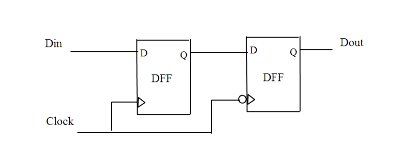

| Description | Working on the same edge of the clock simplifies timing analysis and test insertion. Designing with both edges of the clock may generate a faster design but will require more attention during scan insertion because you cannot mix both kinds of flip-flops in the same scan path unless you include extra control logic such as lookup latches.Arguments:
%s1 is the clock source position. %s2 is the position of flip-flop/latch that uses the positive edge of the clock. %s3 is the position of flip-flop/latch that uses the negedge edge of the clock. You can use the rule_set_parameter Tcl command and the NTL_CLK03_IGNORE_CLOCK_NEGEDGE_IN_MODULES and NTL_CLK03_IGNORE_CLOCK_POSEDGE_IN_MODULES parameters to specify the modules that you want Leda to ignore checking this rule. For example:
leda> rule_set_parameter -rule NTL_CLK03 \ -
parameter
NTL_CLK03_IGNORE_CLOCK_NEGEDGE_IN_MODULES -value
{ MOD1 MOD2 }
leda> rule_set_parameter -rule NTL_CLK03 \ -
parameter NTL_CLK03_IGNORE_CLOCK_ POSEDGE
_IN_MODULES -value { MOD3 MOD4 }
The default value of these 2 parameters is null. |
| Policy | DESIGN |
| Ruleset | CLOCKS |
| Language | VHDL/Verilog |
| Type | Hardware |
| Severity | Error |
This is an example of invalid Verilog code, followed by a circuit diagram that illustrates the problem:
module ntl_clk03_top (Clk, Reset, Din, Dout); input Clk, Reset, Din; output Dout; reg Dout1, Dout_temp; always @(posedge Clk) // Posedege clock begin if (!Reset) "Dout_temp<= 0;" else Dout_temp <= Din; end always @(negedge Clk) // NTL_CLK03 fires -- negedge clock begin if (!Reset) Dout <= 0; else Dout <= Dout_temp; end endmodule